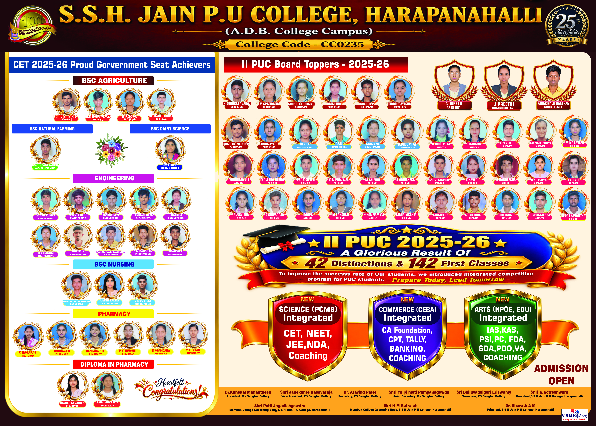
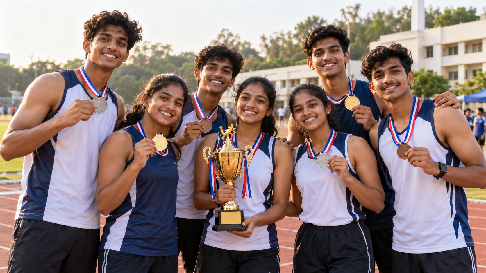
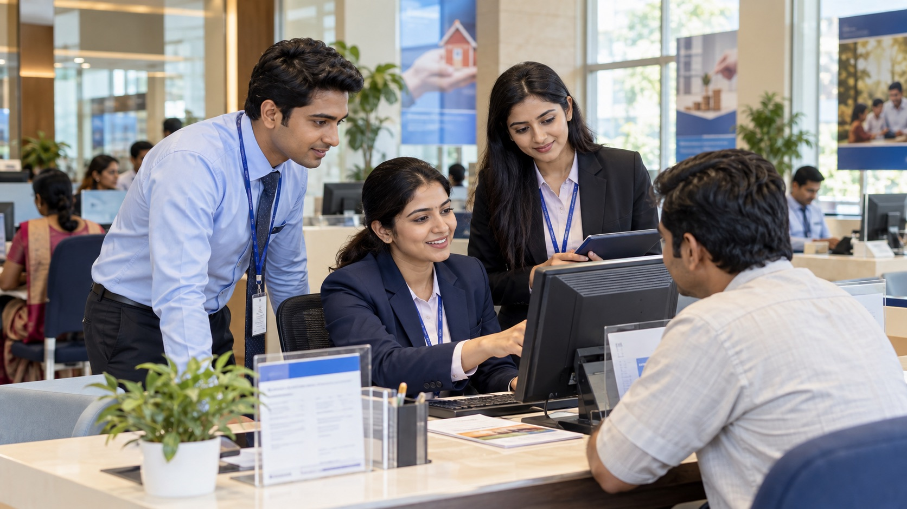

✦
Vision ದೃಷ್ಟಿಕೋನ
To empower holistic learning and academic excellence, inspiring students across Science, Commerce and Arts to become innovative thinkers, ethical leaders and socially responsible citizens prepared for global challenges.
V.V. Sangha · A.D.B. Campus · Harapanahalli
ಎಸ್.ಎಸ್.ಎಚ್. ಜೈನ್ ಪದವಿ ಪೂರ್ವ ಕಾಲೇಜು
A focused pre-university institution where academic rigour, integrated competitive coaching and personal mentorship shape purposeful futures.ಶೈಕ್ಷಣಿಕ ಶಿಸ್ತು, ಸ್ಪರ್ಧಾತ್ಮಕ ಪರೀಕ್ಷಾ ತರಬೇತಿ ಮತ್ತು ವೈಯಕ್ತಿಕ ಮಾರ್ಗದರ್ಶನದೊಂದಿಗೆ ವಿದ್ಯಾರ್ಥಿಗಳ ಭವಿಷ್ಯವನ್ನು ರೂಪಿಸುವ ಸಂಸ್ಥೆ.
Our direction · ನಮ್ಮ ದಿಕ್ಕು
Our academic ecosystem is designed to help students think clearly, act responsibly and progress confidently.
To empower holistic learning and academic excellence, inspiring students across Science, Commerce and Arts to become innovative thinkers, ethical leaders and socially responsible citizens prepared for global challenges.
To unite strong teaching, practical learning, integrated coaching, character development and personalised mentorship so every student can discover and fulfil their potential.
Institutional leadership · ಸಂಸ್ಥೆಯ ನಾಯಕತ್ವ

“Our goal is not only academic rank, but the development of compassionate leaders, innovative thinkers and responsible citizens.”
Read full note →
“Our experienced faculty help each learner understand concepts clearly, build confidence and prepare purposefully for the future.”
Read full note →Academic achievement · ಶೈಕ್ಷಣಿಕ ಸಾಧನೆ
A dedicated record of performance across Science, Commerce and Arts.
Celebrating 42 board performers across Science, Commerce and Arts.
View student roster ↓Students selected across Engineering, Agriculture, Nursing, Pharmacy and allied programmes.
View student roster ↓138 student records mapped using the official photo numbers and presented with consistent grey studio backgrounds—no banner crops.


Sports achievers · ಕ್ರೀಡಾ ಸಾಧಕರು
Meet the 56 students representing SSH Jain PU College across athletics, team sports and state-level selections during 2026–27.
View all 56 achievers ↓Student names, classes and achievements are presented from the official college sports list, grouped by their principal event.
Contribution from our institution to society
Our alumni carry their college foundations into healthcare, technology, finance and public service.




Academic streams · ಶೈಕ್ಷಣಿಕ ವಿಭಾಗಗಳು
Physics, Chemistry, Mathematics and Biology with integrated competitive preparation.ಕೆಸಿಇಟಿ, ನೀಟ್ ಮತ್ತು ಜೆಇಇಗೆ ಸಮಗ್ರ ತರಬೇತಿ.
Computer Science, Economics, Business Studies and Accountancy.ವ್ಯವಹಾರ, ಹಣಕಾಸು ಮತ್ತು ವೃತ್ತಿಪರ ಶಿಕ್ಷಣದ ದಾರಿ.
HEPOK and HPEOK combinations with integrated competitive coaching.ಸರ್ಕಾರಿ ಉದ್ಯೋಗ ಮತ್ತು ಸ್ಪರ್ಧಾತ್ಮಕ ಪರೀಕ್ಷೆಗಳಿಗೆ ವಿಶೇಷ ತರಬೇತಿ.
Learning environment · ಕಲಿಕೆಯ ವಾತಾವರಣ

Practical spaces where observation, experimentation and concepts connect.

A place for physical activity, practice and community events.
For 28 years, our college has provided quality education through highly experienced teaching faculty. We combine academics with competitive coaching, discipline, sports, cultural events and skill development so students grow into confident and capable individuals.
Pre-University education is the critical bridge between school learning and professional careers. Our campus is designed to foster curiosity, discipline and holistic growth while keeping moral values at the centre of education.
Our people · ನಮ್ಮ ತಂಡ
Faculty are presented in the required order: Teaching Faculty, Laboratory Team and Office Team.
Hear from our students
Draft student-spotlight copy based on the official 2025–26 results; final quotations can be approved by each student.

“The clear academic structure and regular guidance helped me stay consistent, strengthen my concepts and approach every examination with confidence.”Draft testimonial · pending student approval

“My teachers encouraged disciplined preparation and practical understanding. That support helped me turn daily effort into a result I am proud of.”Draft testimonial · pending student approval

“The college gave me the confidence to ask questions, think independently and prepare with purpose. I always felt that my progress mattered.”Draft testimonial · pending student approval
Admissions 2026–27 · ಪ್ರವೇಶ ಆರಂಭ
Send an enquiry and let the college team guide you through streams, eligibility, documents and fees.ವಿಭಾಗ, ಅರ್ಹತೆ, ದಾಖಲೆಗಳು ಮತ್ತು ಶುಲ್ಕದ ಕುರಿತು ನಮ್ಮ ತಂಡ ಮಾರ್ಗದರ್ಶನ ನೀಡುತ್ತದೆ.
Campus calendar · ಕಾಲೇಜು ಚಟುವಟಿಕೆಗಳು
Explore college life through academic, cultural and community activities. Select a story to open the full update.